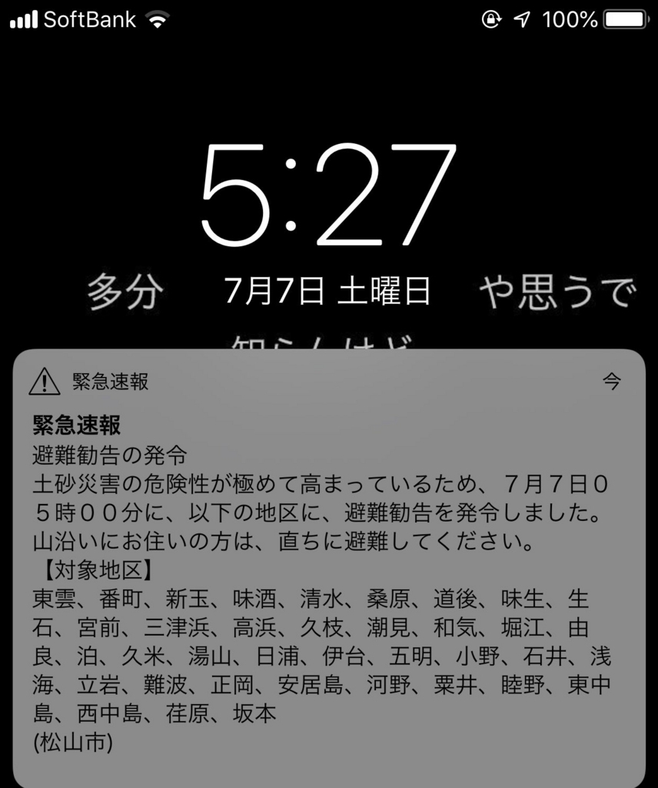
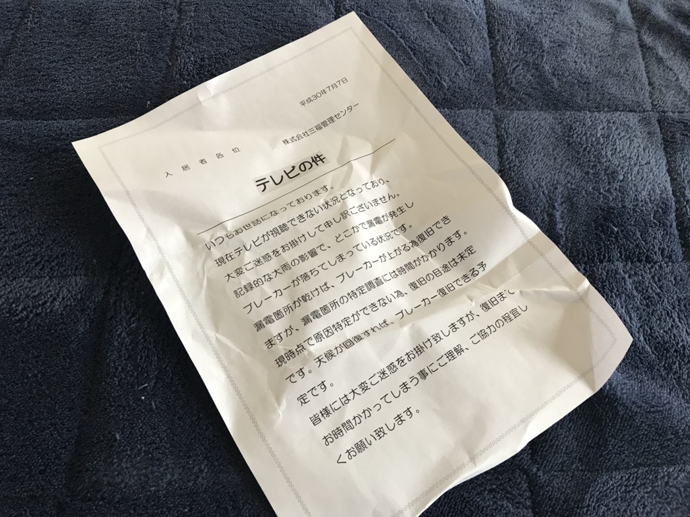

7月7日～8日：豪雨の被害
公開日：

明け方、iPhone の緊急速報で叩き起こされた。幸い、自分の住んでいるところは問題なかった――というか、引っ越しに際して結構リサーチしてあるから大丈夫。こう見えて、割かし備えるタイプなのだ。東京に住んでた時も、何かあったら歩いて帰れるところ、浸水しないところを選んでいたので、震災の際もちゃんと歩いて帰ることができた。
そもそも中予（愛媛県の中部）は三方が山で守られてて災害は少ない。山を隔てた南予は大変そうで、ちょっと心苦しいところあるけど。加えて、ウチの家は少し内陸＆大きな川からは離れているので浸水の心配は少ないし（その代わり水不足だけどｗ）、がけ崩れの恐れのある山沿いでもない。ハザードマップを見ると近くの小さな川が氾濫する可能性がゼロではないことがわかるが、住んでるのはマンションの7階だし、あまり問題にはならない。最悪、バイクがダメになるぐらいか。心配は地震ぐらいだけど、それを言い出したら日本中、地震からは逃れられないわけで、そこは気にしない。
つまり、ほぼ大丈夫なところをチョイスしているのだけど、それでもいくつか影響はあった。
ネットがつながらなくなった
お客様各位、
xxx.synology.me への接続は 2018-07-07 09:14:24 +09:00 より消失しました DiskStation のネットワーク接続をご確認の上、DDNS サービスが有効になっていることを確認してください。
以上、よろしくお願い申し上げます。
Synology アカウント
ネットの調子がおかしいなーと思ってたんだけど、光回線が死んだ。詳しい時刻はわからないけれど、Synology が繋がらなくなったのは9時半前みたいなので、それよりちょっと前のことだと思う。
しょうがないので、モバイル回線と WiMax2 でしのいでいる。Alexa が動かないのが不便……。
TV が映らない
明日の NHK 将棋までには直ってほしい pic.twitter.com/0k9QgwjUST
— だるねとやなさん (@daruyanagi) 2018年7月7日
ワールドカップとか将棋がみたかったのだけど、TV が映らなかった。
窓際で見るしかない pic.twitter.com/bCxOFO6YdT
— だるねとやなさん (@daruyanagi) 2018年7月7日
USB チューナーで観れるけど、電波がよくないのであまり見る気はしなかった。ニュースは麻原彰晃の死刑と水害の話しかないだろうし、そういうのはネットでも見れる。
翌日、共用玄関に降りてみると、「テレビ映んなくてごめんなさい」っていうチラシが入ってた。

どうやら漏電っしちゃったらしい。玄関のオートロックが動かず、自動ドアが解法状態になってたけど、家の電気やエレベーターは無事なので、まぁ、そんなに困らない。でも、ネットも含めて復旧時期未定だったらちょっと仕事に支障が出るなぁ。しょうがないので、日曜日に少し仕事をして、月曜日、そんなにあたふたしないで済むようにした。
とりあえず、災害時の情報収集はラジオが最強らしい。ついでに動くかどうか確かめておいた（動いた）。
インターホンが壊れた
たぶんテレビが使えないとかの関係で、インターホンもダメだった。ずっと家にいたのに、郵便物を持ち帰られちゃって悲しかった。
明日は晴れたらスーパーに買い出しに行こうと思う。葉のモノを食べつくしてしまった。